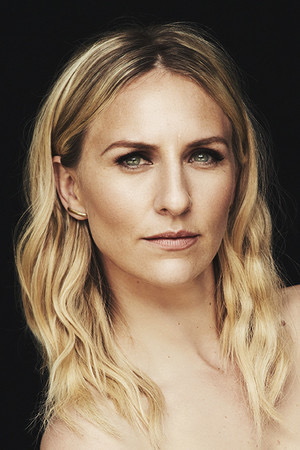
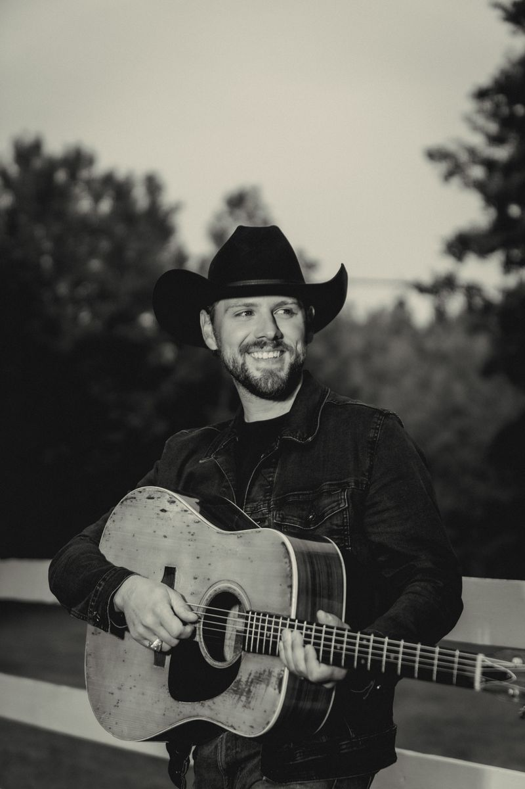

Reflections from those who have sat, breathed, and returned — gathered from ceremonies at Ancient Fire.
“Breathwork with Amber is a lifetime of talk therapy in one session.”

“I have done years of talk therapy — years — Breathwork with Amber is a lifetime of talk therapy in one session. I can't express how important this work is. I was transported to childhood, through past traumas, into outer space, but most importantly, I became incredibly present. Amber's facilitation is wonderfully intuitive and nurturing.
I have had several profound Breathwork sessions with Amber. She is such an intuitive, attentive, present guide through the process that it is hard to describe. I would recommend this work with this practitioner to anyone.
With your innate ability to hold the most incredible safe space, you allowed me to finally see me, for who I truly am. You guided me, held me and allowed all of the angry, pent-up, wounded parts of myself, to surface and be released. I am a changed Woman. Thank you Amber, for holding that space.

“I didn't know anything about Breathwork but I was desperate for anything that could help me understand my reality, help heal my traumas, and most importantly, move forward. I arrived confused, hurt, and as a walking shell. I left feeling inspired, hopeful, and felt significant relief. I laughed. I cried. I felt. And most importantly, I started to heal.
Super grateful to have found the breathwork ceremonies offered at Ancient Fire. The space is beautiful, relaxing and very well-held; the facilitation is both grounded and sacred. When I'm there, I feel empowered and supported to work with whatever is coming up.
It would be difficult to overstate how impactful the experience of Breathwork with Amber has been for me. She guided me through awakening my power and a connection to my body that I didn't know was available. Her skill at creating a safe, supported and patient environment allowed for a transformation that I've carried into my life. My gratitude is infinite.
Amber's private Breathwork Ceremony was an experience like no other. Her gentle and knowledgeable coaching helped me to create a journey that had very positive results on my physical health — as well as brought forth a sense of clarity and calm I had not felt in a very long time.
Amber is incredibly gifted, loving and caring. She KNOWS intuitively exactly what you need and when you need it. If you have never experienced breathwork, or are an expert, or are really ready to shake up your healing — you must check this out. It is absolutely incredible.
I attend breathwork sessions with Amber and Jesse and I am always very pleased with how seriously they take the work. They hold the space well for everyone, and have an ability to see what each person needs as the session progresses. These two are the real deal.
I've been fortunate enough to attend several Shamanic Breathwork sessions at Ancient Fire and I've found them incredibly healing. I immediately felt nurtured and safe — charmed by the energy of wisdom, strength, and heart-centeredness embodied by the facilitators.
Ancient Fire's Breathwork Ceremonies have helped me see what is hidden within myself. They have allowed me to further process grief, to understand love, to feel more alive and be more in tune with myself and the world around me. A safe haven to be unapologetically raw, to go deep and emerge a little lighter and brighter than before. All you have to do is show up, be open, be present and Breathe.
This was my first Breathwork session. From the moment I walked through the Ancient Fire door there was an overall feeling of being welcome and cared for. The expert guidance from Amber and Jesse helped me relax and feel safe to express myself freely with each breath. It left me wanting more.
My wife and I attended several ceremonies at Ancient Fire. They provided a very safe and sacred environment for us to have an amazing experience. So much so, that we introduced 7 of our friends. I highly recommend Amber and Jesse.
I am extremely grateful for the private breathwork session with Amber. I am relatively new to breathwork but knew instantly when I entered the room it would be intense. What I enjoyed most was how I was always in complete control of the experience. It was very challenging and yet transformational for me.
I arrived open and with ‘a lot of knowledge of who I was’. I left knowing that I don't know a thing. Thank you from the bottom of my heart for helping me reset completely. It was a very humbling and profound experience. It was so precious being in your presence.
I've been participating in the breathing sessions at Ancient Fire for about six months now, almost every Saturday or Sunday. Amber, Jesse and Ancient Fire are very skilled, wise, great-hearted and supportive people. Their guidance helped me a lot in my healing process. Give it a try — it's really worth it.
When you are ready,
the breath is waiting.